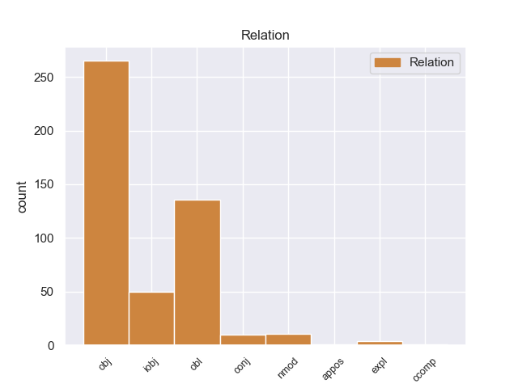
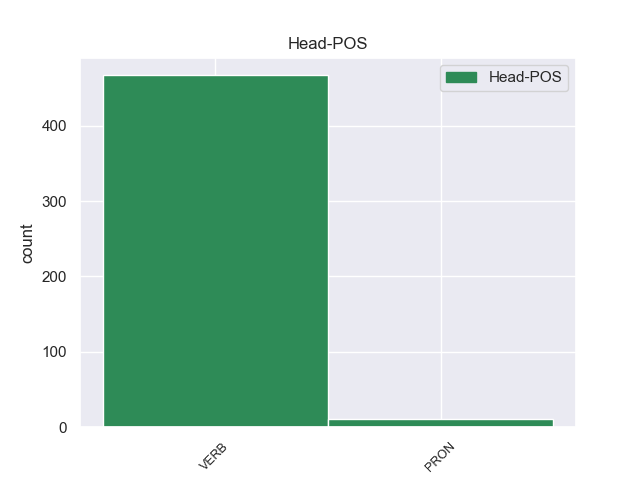
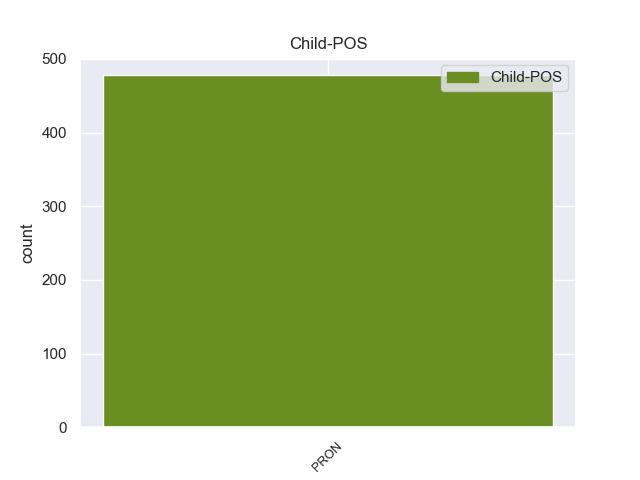

Distribution of features within this leaf



Agreement Rules sorted by frequency.
- When the dependent token is the object(obj) of the head token, and the dependent token is PRON.
1 Έτσι _ _ _ _ 0 _ _ _
2 συγκροτήθηκε _ _ _ _ 0 _ _ _
3 ένα _ _ _ _ 0 _ _ _
4 αυτόνομο _ _ _ _ 0 _ _ _
5 κράτος _ _ _ _ 0 _ _ _
6 , _ _ _ _ 0 _ _ _
7 υποτελές _ _ _ _ 0 _ _ _
8 σ _ _ _ _ 0 _ _ _
9 το _ _ _ _ 0 _ _ _
10 Οθωμανικό _ _ _ _ 0 _ _ _
11 κράτος _ _ _ _ 0 _ _ _
12 , _ _ _ _ 0 _ _ _
13 σ _ _ _ _ 0 _ _ _
14 τη _ _ _ _ 0 _ _ _
15 διακυβέρνηση _ _ _ _ 0 _ _ _
16 του _ _ _ _ 0 _ _ _
17 οποίου οποίος PRON PRON Case=Gen|Gender=Neut|Number=Sing|Person=3|PronType=Rel 18 obj _ _
18 συμμετείχαν συμμετέχω VERB VERB Aspect=Imp|Mood=Ind|Number=Plur|Person=3|Tense=Past|VerbForm=Fin|Voice=Act 0 _ _ _
19 Έλληνες _ _ _ _ 0 _ _ _
20 , _ _ _ _ 0 _ _ _
21 Βούλγαροι _ _ _ _ 0 _ _ _
22 , _ _ _ _ 0 _ _ _
23 Τούρκοι _ _ _ _ 0 _ _ _
24 , _ _ _ _ 0 _ _ _
25 καθώς _ _ _ _ 0 _ _ _
26 και _ _ _ _ 0 _ _ _
27 Εβραίοι _ _ _ _ 0 _ _ _
28 οι _ _ _ _ 0 _ _ _
29 οποίοι _ _ _ _ 0 _ _ _
30 είχαν _ _ _ _ 0 _ _ _
31 δημιουργήσει _ _ _ _ 0 _ _ _
32 μια _ _ _ _ 0 _ _ _
33 σημαντική _ _ _ _ 0 _ _ _
34 παροικία _ _ _ _ 0 _ _ _
35 σ _ _ _ _ 0 _ _ _
36 τη _ _ _ _ 0 _ _ _
37 Θεσσαλονίκη _ _ _ _ 0 _ _ _
38 . _ _ _ _ 0 _ _ _
1 Μόνο _ _ _ _ 0 _ _ _
2 με _ _ _ _ 0 _ _ _
3 αυτόν αυτός PRON PRON Case=Acc|Gender=Masc|Number=Sing|Person=3|PronType=Dem 4 obl _ _
4 μπορούν μπορώ VERB VERB Aspect=Imp|Mood=Ind|Number=Plur|Person=3|Tense=Pres|VerbForm=Fin|Voice=Act 0 _ _ _
5 να _ _ _ _ 0 _ _ _
6 γίνουν _ _ _ _ 0 _ _ _
7 διαπραγματεύσεις _ _ _ _ 0 _ _ _
8 . _ _ _ _ 0 _ _ _
1 Το _ _ _ _ 0 _ _ _
2 μόνο _ _ _ _ 0 _ _ _
3 συνεπώς _ _ _ _ 0 _ _ _
4 που _ _ _ _ 0 _ _ _
5 μπορούσαν _ _ _ _ 0 _ _ _
6 να _ _ _ _ 0 _ _ _
7 κάνουν _ _ _ _ 0 _ _ _
8 ήταν _ _ _ _ 0 _ _ _
9 ν' _ _ _ _ 0 _ _ _
10 αυξήσουν _ _ _ _ 0 _ _ _
11 την _ _ _ _ 0 _ _ _
12 επιρροή _ _ _ _ 0 _ _ _
13 τους _ _ _ _ 0 _ _ _
14 σ _ _ _ _ 0 _ _ _
15 τους _ _ _ _ 0 _ _ _
16 πληθυσμούς _ _ _ _ 0 _ _ _
17 της _ _ _ _ 0 _ _ _
18 περιοχής _ _ _ _ 0 _ _ _
19 , _ _ _ _ 0 _ _ _
20 παράλληλα _ _ _ _ 0 _ _ _
21 μ' _ _ _ _ 0 _ _ _
22 εκείνη _ _ _ _ 0 _ _ _
23 προς _ _ _ _ 0 _ _ _
24 τον _ _ _ _ 0 _ _ _
25 Σουλτάνο _ _ _ _ 0 _ _ _
26 σ _ _ _ _ 0 _ _ _
27 τη _ _ _ _ 0 _ _ _
28 Κωνσταντινούπολη _ _ _ _ 0 _ _ _
29 , _ _ _ _ 0 _ _ _
30 για _ _ _ _ 0 _ _ _
31 όσο _ _ _ _ 0 _ _ _
32 χρόνο _ _ _ _ 0 _ _ _
33 θα _ _ _ _ 0 _ _ _
34 " _ _ _ _ 0 _ _ _
35 παρέμενε _ _ _ _ 0 _ _ _
36 " _ _ _ _ 0 _ _ _
37 ( _ _ _ _ 0 _ _ _
38 ή _ _ _ _ 0 _ _ _
39 θα _ _ _ _ 0 _ _ _
40 του εγώ PRON PRON Case=Gen|Gender=Masc|Number=Sing|Person=3|PronType=Prs 41 iobj _ _
41 επέτρεπαν επιτρέπω VERB VERB Aspect=Imp|Mood=Ind|Number=Plur|Person=3|Tense=Past|VerbForm=Fin|Voice=Act 0 _ _ _
42 ) _ _ _ _ 0 _ _ _
43 τη _ _ _ _ 0 _ _ _
44 συνέχεια _ _ _ _ 0 _ _ _
45 της _ _ _ _ 0 _ _ _
46 Αυτοκρατορίας _ _ _ _ 0 _ _ _
47 του _ _ _ _ 0 _ _ _
48 , _ _ _ _ 0 _ _ _
49 προκειμένου _ _ _ _ 0 _ _ _
50 να _ _ _ _ 0 _ _ _
51 είναι _ _ _ _ 0 _ _ _
52 έτοιμες _ _ _ _ 0 _ _ _
53 να _ _ _ _ 0 _ _ _
54 υποστηρίξουν _ _ _ _ 0 _ _ _
55 ένα _ _ _ _ 0 _ _ _
56 ή _ _ _ _ 0 _ _ _
57 περισσότερους _ _ _ _ 0 _ _ _
58 από _ _ _ _ 0 _ _ _
59 τους _ _ _ _ 0 _ _ _
60 διαδόχους _ _ _ _ 0 _ _ _
61 του _ _ _ _ 0 _ _ _
62 οθωμανικού _ _ _ _ 0 _ _ _
63 καθεστώτος _ _ _ _ 0 _ _ _
64 που _ _ _ _ 0 _ _ _
65 θα _ _ _ _ 0 _ _ _
66 μπορούσαν _ _ _ _ 0 _ _ _
67 να _ _ _ _ 0 _ _ _
68 ήταν _ _ _ _ 0 _ _ _
69 οι _ _ _ _ 0 _ _ _
70 Σέρβοι _ _ _ _ 0 _ _ _
71 , _ _ _ _ 0 _ _ _
72 οι _ _ _ _ 0 _ _ _
73 Έλληνες _ _ _ _ 0 _ _ _
74 , _ _ _ _ 0 _ _ _
75 οι _ _ _ _ 0 _ _ _
76 Βούλγαροι _ _ _ _ 0 _ _ _
77 , _ _ _ _ 0 _ _ _
78 οι _ _ _ _ 0 _ _ _
79 Αλβανοί _ _ _ _ 0 _ _ _
80 , _ _ _ _ 0 _ _ _
81 ακόμα _ _ _ _ 0 _ _ _
82 και _ _ _ _ 0 _ _ _
83 οι _ _ _ _ 0 _ _ _
84 γηγενείς _ _ _ _ 0 _ _ _
85 Μακεδόνες _ _ _ _ 0 _ _ _
86 , _ _ _ _ 0 _ _ _
87 που _ _ _ _ 0 _ _ _
88 οι _ _ _ _ 0 _ _ _
89 πιθανότητές _ _ _ _ 0 _ _ _
90 να _ _ _ _ 0 _ _ _
91 ιδρύσουν _ _ _ _ 0 _ _ _
92 ανεξάρτητα _ _ _ _ 0 _ _ _
93 έθνη _ _ _ _ 0 _ _ _
94 δεν _ _ _ _ 0 _ _ _
95 ήταν _ _ _ _ 0 _ _ _
96 και _ _ _ _ 0 _ _ _
97 εντελώς _ _ _ _ 0 _ _ _
98 ανύπαρκτες _ _ _ _ 0 _ _ _
99 . _ _ _ _ 0 _ _ _
1 Την _ _ _ _ 0 _ _ _
2 κυβέρνηση _ _ _ _ 0 _ _ _
3 Δηλιγιάννη _ _ _ _ 0 _ _ _
4 διαδέχθηκε διαδέχομαι VERB VERB Aspect=Perf|Mood=Ind|Number=Sing|Person=3|Tense=Past|VerbForm=Fin|Voice=Pass 0 _ _ _
5 η _ _ _ _ 0 _ _ _
6 κυβέρνηση _ _ _ _ 0 _ _ _
7 Ράλλη _ _ _ _ 0 _ _ _
8 κι _ _ _ _ 0 _ _ _
9 αυτήν αυτός PRON PRON Case=Acc|Gender=Fem|Number=Sing|Person=3|PronType=Dem 4 conj _ _
10 η _ _ _ _ 0 _ _ _
11 κυβέρνηση _ _ _ _ 0 _ _ _
12 Αλέξανδρου _ _ _ _ 0 _ _ _
13 Ζαΐμη _ _ _ _ 0 _ _ _
14 , _ _ _ _ 0 _ _ _
15 που _ _ _ _ 0 _ _ _
16 υπέγραψε _ _ _ _ 0 _ _ _
17 σ _ _ _ _ 0 _ _ _
18 την _ _ _ _ 0 _ _ _
19 Κωνσταντινούπολη _ _ _ _ 0 _ _ _
20 συνθήκη _ _ _ _ 0 _ _ _
21 ειρήνης _ _ _ _ 0 _ _ _
22 με _ _ _ _ 0 _ _ _
23 την _ _ _ _ 0 _ _ _
24 Τουρκία _ _ _ _ 0 _ _ _
25 . _ _ _ _ 0 _ _ _
1 Ορίστε _ _ _ _ 0 _ _ _
2 δύο _ _ _ _ 0 _ _ _
3 πεδία _ _ _ _ 0 _ _ _
4 δράσης _ _ _ _ 0 _ _ _
5 , _ _ _ _ 0 _ _ _
6 σ _ _ _ _ 0 _ _ _
7 τα _ _ _ _ 0 _ _ _
8 οποία _ _ _ _ 0 _ _ _
9 καλώ _ _ _ _ 0 _ _ _
10 τον _ _ _ _ 0 _ _ _
11 κ. _ _ _ _ 0 _ _ _
12 Επίτροπο _ _ _ _ 0 _ _ _
13 να _ _ _ _ 0 _ _ _
14 εργασθεί _ _ _ _ 0 _ _ _
15 και _ _ _ _ 0 _ _ _
16 σ _ _ _ _ 0 _ _ _
17 τα _ _ _ _ 0 _ _ _
18 οποία οποίος PRON PRON Case=Acc|Gender=Neut|Number=Plur|Person=3|PronType=Rel 0 _ _ _
19 του εγώ PRON PRON Case=Gen|Gender=Neut|Number=Sing|Person=3|PronType=Prs 18 nmod _ _
20 ζητώ _ _ _ _ 0 _ _ _
21 να _ _ _ _ 0 _ _ _
22 μας _ _ _ _ 0 _ _ _
23 κάνει _ _ _ _ 0 _ _ _
24 συμμέτοχους _ _ _ _ 0 _ _ _
25 . _ _ _ _ 0 _ _ _
1 Τον _ _ _ _ 0 _ _ _
2 περασμένο _ _ _ _ 0 _ _ _
3 χρόνο _ _ _ _ 0 _ _ _
4 η _ _ _ _ 0 _ _ _
5 Επιτροπή _ _ _ _ 0 _ _ _
6 είχε _ _ _ _ 0 _ _ _
7 κάνει _ _ _ _ 0 _ _ _
8 μια _ _ _ _ 0 _ _ _
9 μελέτη _ _ _ _ 0 _ _ _
10 από _ _ _ _ 0 _ _ _
11 την _ _ _ _ 0 _ _ _
12 οποία _ _ _ _ 0 _ _ _
13 προέκυπτε _ _ _ _ 0 _ _ _
14 ότι _ _ _ _ 0 _ _ _
15 , _ _ _ _ 0 _ _ _
16 εάν _ _ _ _ 0 _ _ _
17 δεν _ _ _ _ 0 _ _ _
18 υπάρξει _ _ _ _ 0 _ _ _
19 μια _ _ _ _ 0 _ _ _
20 ριζική _ _ _ _ 0 _ _ _
21 επέμβαση _ _ _ _ 0 _ _ _
22 σ _ _ _ _ 0 _ _ _
23 τον _ _ _ _ 0 _ _ _
24 τομέα _ _ _ _ 0 _ _ _
25 της _ _ _ _ 0 _ _ _
26 εκπαίδευσης _ _ _ _ 0 _ _ _
27 και _ _ _ _ 0 _ _ _
28 της _ _ _ _ 0 _ _ _
29 επαγγελματικής _ _ _ _ 0 _ _ _
30 κατάρτισης _ _ _ _ 0 _ _ _
31 , _ _ _ _ 0 _ _ _
32 το _ _ _ _ 0 _ _ _
33 έτος _ _ _ _ 0 _ _ _
34 2010 _ _ _ _ 0 _ _ _
35 το _ _ _ _ 0 _ _ _
36 80 _ _ _ _ 0 _ _ _
37 τοις _ _ _ _ 0 _ _ _
38 εκατό _ _ _ _ 0 _ _ _
39 των _ _ _ _ 0 _ _ _
40 τότε _ _ _ _ 0 _ _ _
41 απασχολούμενων _ _ _ _ 0 _ _ _
42 θα _ _ _ _ 0 _ _ _
43 έχει έχω VERB VERB Aspect=Imp|Mood=Ind|Number=Sing|Person=3|Tense=Pres|VerbForm=Fin|Voice=Act 0 _ _ _
44 απαρχαιωμένες _ _ _ _ 0 _ _ _
45 επαγγελματικές _ _ _ _ 0 _ _ _
46 ικανότητες _ _ _ _ 0 _ _ _
47 , _ _ _ _ 0 _ _ _
48 κάτι κάτι PRON PRON Case=Nom|Gender=Neut|Number=Sing|Person=3|PronType=Ind 43 appos _ _
49 που _ _ _ _ 0 _ _ _
50 θα _ _ _ _ 0 _ _ _
51 καταστήσει _ _ _ _ 0 _ _ _
52 ακόμα _ _ _ _ 0 _ _ _
53 βαθύτερες _ _ _ _ 0 _ _ _
54 τις _ _ _ _ 0 _ _ _
55 υπάρχουσες _ _ _ _ 0 _ _ _
56 ανισότητες _ _ _ _ 0 _ _ _
57 και _ _ _ _ 0 _ _ _
58 θα _ _ _ _ 0 _ _ _
59 δημιουργήσει _ _ _ _ 0 _ _ _
60 νέες _ _ _ _ 0 _ _ _
61 : _ _ _ _ 0 _ _ _
62 συνεχής _ _ _ _ 0 _ _ _
63 κατάρτιση _ _ _ _ 0 _ _ _
64 λοιπόν _ _ _ _ 0 _ _ _
65 και _ _ _ _ 0 _ _ _
66 μεγάλος _ _ _ _ 0 _ _ _
67 όγκος _ _ _ _ 0 _ _ _
68 επενδύσεων _ _ _ _ 0 _ _ _
69 σ _ _ _ _ 0 _ _ _
70 τη _ _ _ _ 0 _ _ _
71 γνώση _ _ _ _ 0 _ _ _
72 και _ _ _ _ 0 _ _ _
73 σ _ _ _ _ 0 _ _ _
74 τη _ _ _ _ 0 _ _ _
75 μάθηση _ _ _ _ 0 _ _ _
76 . _ _ _ _ 0 _ _ _
1 Ωστόσο _ _ _ _ 0 _ _ _
2 ο _ _ _ _ 0 _ _ _
3 ρυθμός _ _ _ _ 0 _ _ _
4 των _ _ _ _ 0 _ _ _
5 εργασιών _ _ _ _ 0 _ _ _
6 - _ _ _ _ 0 _ _ _
7 και _ _ _ _ 0 _ _ _
8 ως _ _ _ _ 0 _ _ _
9 προς _ _ _ _ 0 _ _ _
10 το _ _ _ _ 0 _ _ _
11 ζήτημα _ _ _ _ 0 _ _ _
12 της _ _ _ _ 0 _ _ _
13 συχνότητας _ _ _ _ 0 _ _ _
14 των _ _ _ _ 0 _ _ _
15 συναντήσεων _ _ _ _ 0 _ _ _
16 της _ _ _ _ 0 _ _ _
17 συντακτικής _ _ _ _ 0 _ _ _
18 συνέλευσης _ _ _ _ 0 _ _ _
19 - _ _ _ _ 0 _ _ _
20 πρέπει _ _ _ _ 0 _ _ _
21 να _ _ _ _ 0 _ _ _
22 διασφαλίζει διασφαλίζω VERB VERB Aspect=Imp|Mood=Ind|Number=Sing|Person=3|Tense=Pres|VerbForm=Fin|Voice=Act 0 _ _ _
23 ότι _ _ _ _ 0 _ _ _
24 η _ _ _ _ 0 _ _ _
25 συνέλευση _ _ _ _ 0 _ _ _
26 είναι _ _ _ _ 0 _ _ _
27 εκείνη εκείνος PRON PRON Case=Nom|Gender=Fem|Number=Sing|Person=3|PronType=Dem 22 ccomp _ _
28 που _ _ _ _ 0 _ _ _
29 διεξάγει _ _ _ _ 0 _ _ _
30 τη _ _ _ _ 0 _ _ _
31 συζήτηση _ _ _ _ 0 _ _ _
32 για _ _ _ _ 0 _ _ _
33 το _ _ _ _ 0 _ _ _
34 μέλλον _ _ _ _ 0 _ _ _
35 της _ _ _ _ 0 _ _ _
36 Ευρώπης _ _ _ _ 0 _ _ _
37 . _ _ _ _ 0 _ _ _
1 Οι _ _ _ _ 0 _ _ _
2 Τούρκοι _ _ _ _ 0 _ _ _
3 πρότειναν _ _ _ _ 0 _ _ _
4 να _ _ _ _ 0 _ _ _
5 γίνει _ _ _ _ 0 _ _ _
6 ανταλλαγή _ _ _ _ 0 _ _ _
7 της _ _ _ _ 0 _ _ _
8 Κρήτης _ _ _ _ 0 _ _ _
9 με _ _ _ _ 0 _ _ _
10 τη _ _ _ _ 0 _ _ _
11 Θεσσαλία _ _ _ _ 0 _ _ _
12 που _ _ _ _ 0 _ _ _
13 την εγώ PRON PRON Case=Acc|Gender=Fem|Number=Sing|Person=3|PronType=Prs 14 expl _ _
14 κατείχε κατέχω VERB VERB Aspect=Imp|Mood=Ind|Number=Sing|Person=3|Tense=Past|VerbForm=Fin|Voice=Act 0 _ _ _
15 ο _ _ _ _ 0 _ _ _
16 στρατός _ _ _ _ 0 _ _ _
17 τους _ _ _ _ 0 _ _ _
18 . _ _ _ _ 0 _ _ _
Disagree Examples:
1 Μοιάζει _ _ _ _ 0 _ _ _
2 ειρωνεία _ _ _ _ 0 _ _ _
3 τέτοια _ _ _ _ 0 _ _ _
4 δήλωση _ _ _ _ 0 _ _ _
5 να _ _ _ _ 0 _ _ _
6 προέρχεται _ _ _ _ 0 _ _ _
7 από _ _ _ _ 0 _ _ _
8 αυτόν _ _ _ _ 0 _ _ _
9 τον _ _ _ _ 0 _ _ _
10 άνθρωπο _ _ _ _ 0 _ _ _
11 , _ _ _ _ 0 _ _ _
12 αλλά _ _ _ _ 0 _ _ _
13 η _ _ _ _ 0 _ _ _
14 αλήθεια _ _ _ _ 0 _ _ _
15 είναι _ _ _ _ 0 _ _ _
16 ότι _ _ _ _ 0 _ _ _
17 όντως _ _ _ _ 0 _ _ _
18 την _ _ _ _ 0 _ _ _
19 έκανε _ _ _ _ 0 _ _ _
20 και _ _ _ _ 0 _ _ _
21 εγώ _ _ _ _ 0 _ _ _
22 ο _ _ _ _ 0 _ _ _
23 ίδιος _ _ _ _ 0 _ _ _
24 είχα _ _ _ _ 0 _ _ _
25 την _ _ _ _ 0 _ _ _
26 ευκαιρία _ _ _ _ 0 _ _ _
27 να _ _ _ _ 0 _ _ _
28 την εγώ PRON PRON Case=Acc|Gender=Fem|Number=Sing|Person=3|PronType=Prs 29 obj _ _
29 ακούσω ακούζω VERB VERB Aspect=Imp|Mood=Ind|Number=Sing|Person=1|Tense=Pres|VerbForm=Fin|Voice=Act 0 _ _ _
30 και _ _ _ _ 0 _ _ _
31 δεν _ _ _ _ 0 _ _ _
32 νομίζω _ _ _ _ 0 _ _ _
33 ότι _ _ _ _ 0 _ _ _
34 απέχει _ _ _ _ 0 _ _ _
35 πάρα _ _ _ _ 0 _ _ _
36 πολύ _ _ _ _ 0 _ _ _
37 από _ _ _ _ 0 _ _ _
38 την _ _ _ _ 0 _ _ _
39 σημερινή _ _ _ _ 0 _ _ _
40 πραγματικότητα _ _ _ _ 0 _ _ _
41 , _ _ _ _ 0 _ _ _
42 κάτι _ _ _ _ 0 _ _ _
43 που _ _ _ _ 0 _ _ _
44 με _ _ _ _ 0 _ _ _
45 οδηγεί _ _ _ _ 0 _ _ _
46 να _ _ _ _ 0 _ _ _
47 δηλώσω _ _ _ _ 0 _ _ _
48 την _ _ _ _ 0 _ _ _
49 αναγκαιότητα _ _ _ _ 0 _ _ _
50 αναθεώρησης _ _ _ _ 0 _ _ _
51 και _ _ _ _ 0 _ _ _
52 τοποθέτησης _ _ _ _ 0 _ _ _
53 σε _ _ _ _ 0 _ _ _
54 νέες _ _ _ _ 0 _ _ _
55 βάσεις _ _ _ _ 0 _ _ _
56 των _ _ _ _ 0 _ _ _
57 σχέσεων _ _ _ _ 0 _ _ _
58 μεταξύ _ _ _ _ 0 _ _ _
59 βορρά _ _ _ _ 0 _ _ _
60 και _ _ _ _ 0 _ _ _
61 νότου _ _ _ _ 0 _ _ _
62 , _ _ _ _ 0 _ _ _
63 δηλαδή _ _ _ _ 0 _ _ _
64 την _ _ _ _ 0 _ _ _
65 ανάγκη _ _ _ _ 0 _ _ _
66 αναθεώρησης _ _ _ _ 0 _ _ _
67 του _ _ _ _ 0 _ _ _
68 ρόλου _ _ _ _ 0 _ _ _
69 της _ _ _ _ 0 _ _ _
70 Ευρωπαϊκής _ _ _ _ 0 _ _ _
71 Ένωσης _ _ _ _ 0 _ _ _
72 σε _ _ _ _ 0 _ _ _
73 αυτό _ _ _ _ 0 _ _ _
74 το _ _ _ _ 0 _ _ _
75 πλαίσιο _ _ _ _ 0 _ _ _
76 , _ _ _ _ 0 _ _ _
77 εφόσον _ _ _ _ 0 _ _ _
78 είναι _ _ _ _ 0 _ _ _
79 βέβαιο _ _ _ _ 0 _ _ _
80 ότι _ _ _ _ 0 _ _ _
81 η _ _ _ _ 0 _ _ _
82 προώθηση _ _ _ _ 0 _ _ _
83 μίας _ _ _ _ 0 _ _ _
84 νέας _ _ _ _ 0 _ _ _
85 παγκόσμιας _ _ _ _ 0 _ _ _
86 τάξης _ _ _ _ 0 _ _ _
87 δικαιότερης _ _ _ _ 0 _ _ _
88 , _ _ _ _ 0 _ _ _
89 αξιοκρατικότερης _ _ _ _ 0 _ _ _
90 δεν _ _ _ _ 0 _ _ _
91 μπορεί _ _ _ _ 0 _ _ _
92 ούτε _ _ _ _ 0 _ _ _
93 πρέπει _ _ _ _ 0 _ _ _
94 να _ _ _ _ 0 _ _ _
95 πάψει _ _ _ _ 0 _ _ _
96 να _ _ _ _ 0 _ _ _
97 αποτελεί _ _ _ _ 0 _ _ _
98 στρατηγικό _ _ _ _ 0 _ _ _
99 στόχο _ _ _ _ 0 _ _ _
100 της _ _ _ _ 0 _ _ _
101 Ένωσης _ _ _ _ 0 _ _ _
102 . _ _ _ _ 0 _ _ _
1 Έστω _ _ _ _ 0 _ _ _
2 κι _ _ _ _ 0 _ _ _
3 αν _ _ _ _ 0 _ _ _
4 πολλές _ _ _ _ 0 _ _ _
5 εξελίξεις _ _ _ _ 0 _ _ _
6 μάς μά PRON PRON Case=Acc|Gender=Masc|Number=Plur|Person=1|PronType=Prs 7 obj _ _
7 έκαναν έκανας VERB VERB Aspect=Perf|Mood=Ind|Number=Plur|Person=3|Tense=Past|VerbForm=Fin|Voice=Act 0 _ _ _
8 να _ _ _ _ 0 _ _ _
9 αμφιβάλουμε _ _ _ _ 0 _ _ _
10 , _ _ _ _ 0 _ _ _
11 θεωρούσαμε _ _ _ _ 0 _ _ _
12 εντούτοις _ _ _ _ 0 _ _ _
13 πως _ _ _ _ 0 _ _ _
14 έτσι _ _ _ _ 0 _ _ _
15 είχαν _ _ _ _ 0 _ _ _
16 τα _ _ _ _ 0 _ _ _
17 πράγματα _ _ _ _ 0 _ _ _
18 και _ _ _ _ 0 _ _ _
19 , _ _ _ _ 0 _ _ _
20 μέχρι _ _ _ _ 0 _ _ _
21 πρόσφατα _ _ _ _ 0 _ _ _
22 , _ _ _ _ 0 _ _ _
23 επικαλούμασταν _ _ _ _ 0 _ _ _
24 - _ _ _ _ 0 _ _ _
25 αν _ _ _ _ 0 _ _ _
26 και _ _ _ _ 0 _ _ _
27 κάπως _ _ _ _ 0 _ _ _
28 συγκρατημένα _ _ _ _ 0 _ _ _
29 , _ _ _ _ 0 _ _ _
30 ομολογώ _ _ _ _ 0 _ _ _
31 - _ _ _ _ 0 _ _ _
32 την _ _ _ _ 0 _ _ _
33 αρχή _ _ _ _ 0 _ _ _
34 της _ _ _ _ 0 _ _ _
35 επικουρικότητας _ _ _ _ 0 _ _ _
36 . _ _ _ _ 0 _ _ _
1 Έπρεπε _ _ _ _ 0 _ _ _
2 επίσης _ _ _ _ 0 _ _ _
3 να _ _ _ _ 0 _ _ _
4 κάνουμε κάνω VERB VERB Aspect=Imp|Mood=Ind|Number=Plur|Person=1|Tense=Pres|VerbForm=Fin|Voice=Act 0 _ _ _
5 κάτι κάτι PRON PRON Case=Nom|Gender=Neut|Number=Sing|Person=3|PronType=Ind 4 obj _ _
6 για _ _ _ _ 0 _ _ _
7 να _ _ _ _ 0 _ _ _
8 τετραγωνίσουμε _ _ _ _ 0 _ _ _
9 τον _ _ _ _ 0 _ _ _
10 κύκλο _ _ _ _ 0 _ _ _
11 από _ _ _ _ 0 _ _ _
12 άποψη _ _ _ _ 0 _ _ _
13 οργάνωσης _ _ _ _ 0 _ _ _
14 , _ _ _ _ 0 _ _ _
15 δίνοντας _ _ _ _ 0 _ _ _
16 νόημα _ _ _ _ 0 _ _ _
17 σ _ _ _ _ 0 _ _ _
18 τη _ _ _ _ 0 _ _ _
19 συνολική _ _ _ _ 0 _ _ _
20 πολιτική _ _ _ _ 0 _ _ _
21 μου _ _ _ _ 0 _ _ _
22 ευθύνη _ _ _ _ 0 _ _ _
23 για _ _ _ _ 0 _ _ _
24 την _ _ _ _ 0 _ _ _
25 αναπτυξιακή _ _ _ _ 0 _ _ _
26 πολιτική _ _ _ _ 0 _ _ _
27 . _ _ _ _ 0 _ _ _
1 Ας _ _ _ _ 0 _ _ _
2 τα εγώ PRON PRON Case=Acc|Gender=Neut|Number=Plur|Person=3|PronType=Prs 3 obj _ _
3 ονομάσουμε ονομάζω VERB VERB Aspect=Imp|Mood=Ind|Number=Plur|Person=1|Tense=Pres|VerbForm=Fin|Voice=Act 0 _ _ _
4 τα _ _ _ _ 0 _ _ _
5 πρώτα _ _ _ _ 0 _ _ _
6 τρία _ _ _ _ 0 _ _ _
7 θέματα _ _ _ _ 0 _ _ _
8 της _ _ _ _ 0 _ _ _
9 ΔΔ _ _ _ _ 0 _ _ _
10 . _ _ _ _ 0 _ _ _
1 Τέλος _ _ _ _ 0 _ _ _
2 , _ _ _ _ 0 _ _ _
3 προς _ _ _ _ 0 _ _ _
4 αυτή _ _ _ _ 0 _ _ _
5 την _ _ _ _ 0 _ _ _
6 κατεύθυνση _ _ _ _ 0 _ _ _
7 υποβάλουμε _ _ _ _ 0 _ _ _
8 σ _ _ _ _ 0 _ _ _
9 την _ _ _ _ 0 _ _ _
10 Επιτροπή _ _ _ _ 0 _ _ _
11 τρία _ _ _ _ 0 _ _ _
12 ζητήματα _ _ _ _ 0 _ _ _
13 : _ _ _ _ 0 _ _ _
14 πρώτον _ _ _ _ 0 _ _ _
15 , _ _ _ _ 0 _ _ _
16 θα _ _ _ _ 0 _ _ _
17 πρέπει _ _ _ _ 0 _ _ _
18 να _ _ _ _ 0 _ _ _
19 μας εγώ PRON PRON Case=Gen|Gender=Masc|Number=Plur|Person=1|PronType=Prs 20 obj _ _
20 παρέχει παρέχω VERB VERB Aspect=Imp|Mood=Ind|Number=Sing|Person=3|Tense=Pres|VerbForm=Fin|Voice=Act 0 _ _ _
21 σε _ _ _ _ 0 _ _ _
22 τακτά _ _ _ _ 0 _ _ _
23 χρονικά _ _ _ _ 0 _ _ _
24 διαστήματα _ _ _ _ 0 _ _ _
25 τον _ _ _ _ 0 _ _ _
26 κατάλογο _ _ _ _ 0 _ _ _
27 και _ _ _ _ 0 _ _ _
28 τα _ _ _ _ 0 _ _ _
29 ποσά _ _ _ _ 0 _ _ _
30 των _ _ _ _ 0 _ _ _
31 εισφορών _ _ _ _ 0 _ _ _
32 των _ _ _ _ 0 _ _ _
33 άλλων _ _ _ _ 0 _ _ _
34 χορηγών _ _ _ _ 0 _ _ _
35 . _ _ _ _ 0 _ _ _